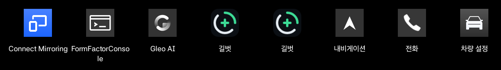
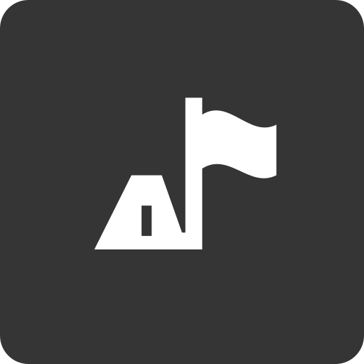
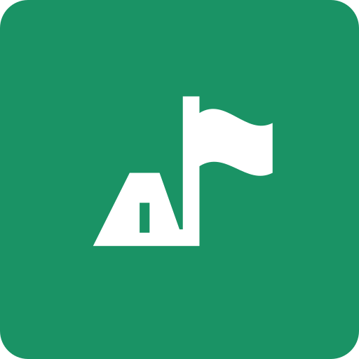

P1 — 길을 품은 말풍선
흰 말풍선 안을 굽은 도로 모양으로 비워, 앞으로 지나갈 길의 이야기를 들려주는 기능을 담았습니다. 말풍선의 넓은 면과 아래로 벌어지는 도로가 작은 크기에서도 남으며, 흰 단색 실루엣과 회색 타일이 Pleos 기본 앱의 표현 방식에 어울립니다.
시스템의 흰 단색 실루엣과 회색 타일에 맞춘 세 가지 방향

아래 회색 이웃 아이콘은 배치 비교용 단순 대체 도형입니다. 타일은 #353535, 모서리 반경은 512px 기준 40px입니다. 브라우저 확대율 100%에서 비교하세요.
내비게이션 → P1 → P2 → P3 → 전화 → 차량 설정

내비게이션 → P1 → P2 → P3 → 전화 → 차량 설정
흰색 / #353535: 12.27:1 · 흰색 / #1A9365: 3.89:1
흰 말풍선 안을 굽은 도로 모양으로 비워, 앞으로 지나갈 길의 이야기를 들려주는 기능을 담았습니다. 말풍선의 넓은 면과 아래로 벌어지는 도로가 작은 크기에서도 남으며, 흰 단색 실루엣과 회색 타일이 Pleos 기본 앱의 표현 방식에 어울립니다.

짧은 도로 옆에 패키지여행 가이드의 사각 깃발을 세웠습니다. 위아래 가장자리가 함께 출렁이는 넓은 천으로 삼각 골프 깃발과 구분하고, 도로와 깃대를 하나의 흰 면으로 연결해 Pleos 아이콘의 단순한 실루엣을 따랐습니다.
옆 유리창을 넓은 흰 면으로 그리고, 한쪽 창의 반짝임을 음각으로 넣었습니다. 어느 쪽 창밖을 볼지 알려 주는 길벗의 역할을 나타내며, 굵은 창틀과 채워진 유리 면으로 가는 선 없이 형태를 유지합니다.